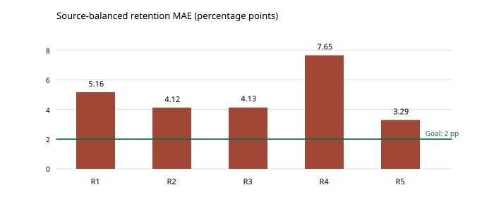

最新澄清：本报告评估的是原八项基准。用户允许协商修改输入、电极体系与范围；输出始终是保持率。查看具体合同备选，新合同尚待选择。
主项目 · 2026-10-29 · 固定输入输出的方向预研
先守住输入输出，再缩小预测问题
目标始终是电容保持率。251次固定输入拟合完成，目前没有方案同时通过R²、误差和泛化要求。新的重点应是同化学系列与完整循环曲线监督。
状态：初步路线审查完成，R²＞0.95挑战目标尚未达到。
先明确什么算达标
| 项目 | 约定 |
|---|
| 输出 | 指定循环次数与工况下的电容保持率（%） |
| 固定输入 | 循环次数、电流密度、电解液、浓度、电位窗下限/上限、BET、参比电极 |
| 决定系数 | R² > 0.95，按真实预测残差计算 |
| 误差 | MAE ≤ 2个百分点；RMSE ≤ 3个百分点；优选1/1.5个百分点 |
| 误差尾部 | 90%预测的绝对误差 ≤ 5个百分点；来源MAE第90百分位 ≤ 5个百分点 |
| 基线 | 来源均衡MAE至少优于训练均值20%，保留来源重采样区间 |
| 泛化 | 整来源留出；全部预处理限训练折；最终另用没有参与路线选择的新来源验证 |
这些是项目建议验收线，属于工程目标，并非行业统一标准。保持率专门研究（Batteries 2025，表6/7）报告MLP在未见器件上R²约0.941、MAE约2.15、RMSE约3.15个百分点；其训练R²约0.976不能移作未见数据成绩。本项目目标更高，而且须保留原八项输入。
所有门槛要在同一批测试上同时通过。R²取决于测试集波动：R²＞0.95要求RMSE小于该测试集标准差的约22.36%。当前窄范围的标准差约4.5–5.2个百分点，实际需要约1.0–1.2个百分点的RMSE，单有RMSE≤3还不够。
已经实际试过什么
下表使用事前指定RF；R5为GPR方法检查，属于已知家族内的留材料检验。没有从外层成绩中挑最高分来宣称成功。R1–R4按整来源留出，范围之间有嵌套，不相加样本。
| 方案 | 记录/来源 | R² | MAE/百分点 | RMSE/百分点 | 结论 |
|---|
| 6M KOH、10000圈，整来源留出 | 14/7 | -0.523 | 5.16 | 6.46 | 未通过 |
| 再固定10 A/g，整来源留出 | 10/6 | -0.546 | 4.12 | 5.65 | 未通过 |
| 植物残余物、6M KOH，整来源留出 | 13/9 | -0.482 | 4.13 | 5.44 | 未通过 |
| 每圈衰减速率变换，整来源留出 | 47/34 | -1.360 | 7.65 | 11.16 | 未通过 |
| 已知论文家族，留出整个材料 | 13/3 | 0.220 | 3.29 | 5.12 | 未通过 |

另试岭回归、XGBoost、小型BP、固定核GPR及RF/XGB、RF/GPR等权组合，均未过线。共251次拟合尝试，1次BP未产生有效完整预测，保留失败，不隐藏或重试挑结果。
为什么缩小范围还不够
原有47条主集只来自34个来源；单固定6M KOH和10000圈，就只剩14条/7来源，再固定10 A/g只剩10条/6来源。范围更统一，同时也更缺独立材料信息。
更具体地，OPBNP与OPNP的原八项中七项相同，BET分别1774.8和1894.9 m²/g，保持率却是93.6%和83.5%，相差10.1个百分点。两者组成有区别；BET相近不能代替化学体系相同。这不是证明模型永远做不到，而是要求我们在原输入不变的前提下，认真限定材料的适用范围。
窄范围也会使保持率变化更小，对R²反而更苛刻。不能只选90%以上的容易材料，或删掉困难来源来获得漂亮分数。
下一轮值得做的五条路线
| 路线 | 怎样守住八项输入与保持率输出 | 已有依据与尚缺内容 |
|---|
| 优先1：完整循环曲线监督 | 将论文R(N)曲线上的多个圈数作为训练标签，输入仍是原八项；RF/XGB/GPR拟合R(N,x)。新材料整条曲线和同来源材料共同留出。 | 已核对AHPC和木粉原图；47行当前主表以端点为主，现行规范库没有可直接调用的密集保持率轨迹表。新增标签需逐图审查，尚未训练这一新库。 |
| 优先2：真正同化学系列的小模型 | 按相同前驱体、固定掺杂体系、活化路线与电极/测试协议选范围，元数据只用于范围核查，部署输入仍八项。先20–40个独立材料的试点，并按来源/批次验证。 | 目前只有少数每篇4–5材料的系列；13材料/3家族留材料结果未过线。原OPBNP/OPNP近BET却差10.1pp，说明“都是生物质碳”还不够窄。20–40是试点规划量，不是达标保证。 |
| 优先3：学习曲线参数的物理启发模型 | 由训练材料全曲线拟合活化与衰减参数，再从八项输入预测参数并还原R(N)。允许真实>100的活化，参数只从训练来源学习。 | 已审作者GitHub的参数学习与组隔离代码；其电池模型和早期电学输入不直接迁入。简单恒定每圈速率本轮失败，需多阶段曲线证据而非直接套公式。 |
| 候选4：核方法与固定融合 | 以log(圈数/电流/BET)、条件类别和相互作用构造核，GPR/核岭刻画局部响应；RF/XGB/GPR的组合权重只能在训练来源内部选择。 | 固定GPR、RF、XGB、BP及两种等权融合本轮均未过线。可以在新的有效训练曲线库形成后另做计划，本轮不追分。 |
| 候选5：外部保持率数据作受审先验 | 对801例公共保持率数据先审字段、材料、原文与来源；能映射到同一八项合同的才作训练/迁移候选，其余只作先验或方法资料。 | Zenodo原始CSV约162KB，资源成本低；尚未下载/逐记录审查，论文混有金属、聚合物等体系，不能直接算成生物质碳有效样本。 |
我建议先做优先1与优先2的联合试点：先审现有论文中约10–20个来源、30–50个材料的完整循环记录，再按证据实际覆盖决定是否建模。此数量是规划范围；一条曲线采20点仍是一个材料的一次试验，不能声称增加20份独立样本。若资料不足，应给出具体论文/图表清单，不先把更多模型堆上去。
完整曲线的用途是给训练集提供不同N的真实保持率标签。预测端仍只有原八项，禁止把待测材料的早期实测保持率、终点值、来源ID塞入模型。需要预测新材料时，其所有曲线点必须共同留出。
论文与开源方法：学什么，哪些不直接迁入
寿命预测的MAPE、比电容的F/g误差、其他材料体系的高R²，仅是方法资料。它们不属于本项目的保持率验收结果。没有运行第三方代码、安装大模型或下载大型数据。
核验与当前边界
独立核验5050项通过；核对八项字段、原标签、整来源/整材料隔离、指标重算及63份输入/源文件哈希。旧数据库、模型和原文保持。所有当前来源已被探索，最终可靠性仍需未参与路线选择的新来源验证。
本轮早期还做过比电容/BET方向的986次拟合或曲线参数拟合，其中三点倍率插值出现高R²。用户纠正方向后，这些结果已单列为偏离目标的方法试验，绝不算保持率达标，也不进入本表。
全部保持率模型结果（含失败覆盖）
| 范围 | 模型 | 有效预测 | R² | MAE | RMSE | 状态 |
|---|
| R1_KOH6_10000 | equal_RF_GPR | 14 | -0.391 | 4.691 | 6.175 | 未通过 |
| R1_KOH6_10000 | equal_RF_XGB | 14 | -0.564 | 5.350 | 6.549 | 未通过 |
| R1_KOH6_10000 | fixed_Matern_GPR | 14 | -0.349 | 4.748 | 6.082 | 未通过 |
| R1_KOH6_10000 | random_forest | 14 | -0.523 | 5.156 | 6.461 | 未通过 |
| R1_KOH6_10000 | ridge | 14 | -0.119 | 4.225 | 5.537 | 未通过 |
| R1_KOH6_10000 | small_BP_MLP | 10 | -0.571 | 4.330 | 5.692 | 缺预测，不可比较 |
| R1_KOH6_10000 | xgboost | 14 | -0.647 | 5.544 | 6.719 | 未通过 |
| R2_KOH6_10000_j10 | equal_RF_GPR | 10 | -0.488 | 4.146 | 5.539 | 未通过 |
| R2_KOH6_10000_j10 | equal_RF_XGB | 10 | -0.442 | 4.192 | 5.454 | 未通过 |
| R2_KOH6_10000_j10 | fixed_Matern_GPR | 10 | -0.509 | 4.171 | 5.579 | 未通过 |
| R2_KOH6_10000_j10 | random_forest | 10 | -0.546 | 4.121 | 5.646 | 未通过 |
| R2_KOH6_10000_j10 | ridge | 10 | -0.869 | 4.835 | 6.209 | 未通过 |
| R2_KOH6_10000_j10 | small_BP_MLP | 10 | -0.779 | 4.643 | 6.058 | 未通过 |
| R2_KOH6_10000_j10 | xgboost | 10 | -0.420 | 4.263 | 5.412 | 未通过 |
| R3_plant_residue_KOH6 | equal_RF_GPR | 13 | -0.475 | 4.238 | 5.422 | 未通过 |
| R3_plant_residue_KOH6 | equal_RF_XGB | 13 | -0.169 | 3.748 | 4.827 | 未通过 |
| R3_plant_residue_KOH6 | fixed_Matern_GPR | 13 | -0.615 | 4.425 | 5.674 | 未通过 |
| R3_plant_residue_KOH6 | random_forest | 13 | -0.482 | 4.130 | 5.435 | 未通过 |
| R3_plant_residue_KOH6 | ridge | 13 | -1.935 | 6.094 | 7.648 | 未通过 |
| R3_plant_residue_KOH6 | small_BP_MLP | 13 | -0.883 | 4.622 | 6.126 | 未通过 |
| R3_plant_residue_KOH6 | xgboost | 13 | -0.060 | 3.579 | 4.597 | 未通过 |
| R4_per_cycle_rate | random_forest | 47 | -1.360 | 7.646 | 11.159 | 未通过 |
| R4_per_cycle_rate | ridge | 47 | -2524.224 | 112.378 | 365.046 | 未通过 |
| R4_per_cycle_rate | xgboost | 47 | -1.189 | 7.206 | 10.748 | 未通过 |
| R5_known_family | fixed_Matern_GPR | 13 | 0.220 | 3.286 | 5.121 | 未通过 |
| R5_known_family | random_forest | 13 | 0.208 | 3.691 | 5.161 | 未通过 |
| R5_known_family | ridge | 13 | -0.061 | 3.410 | 5.972 | 未通过 |